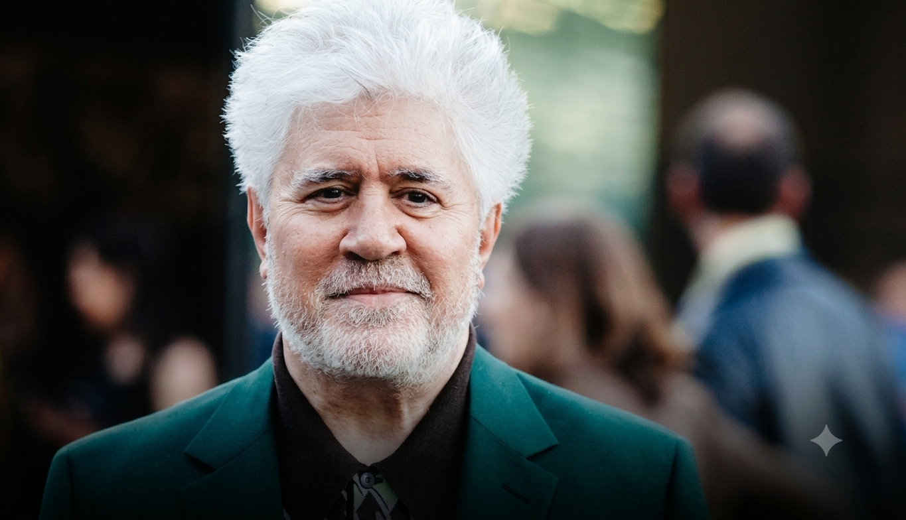
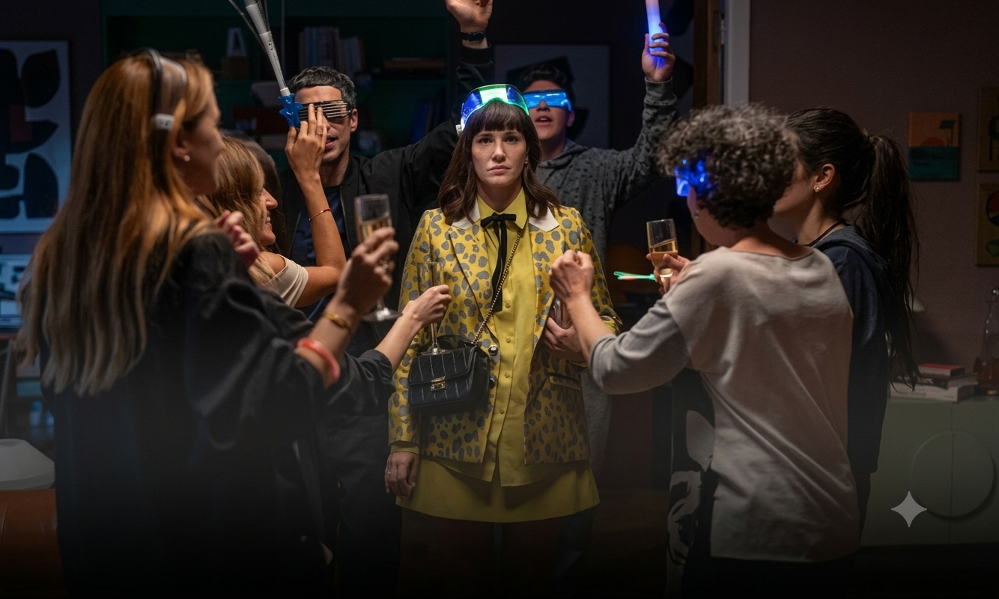
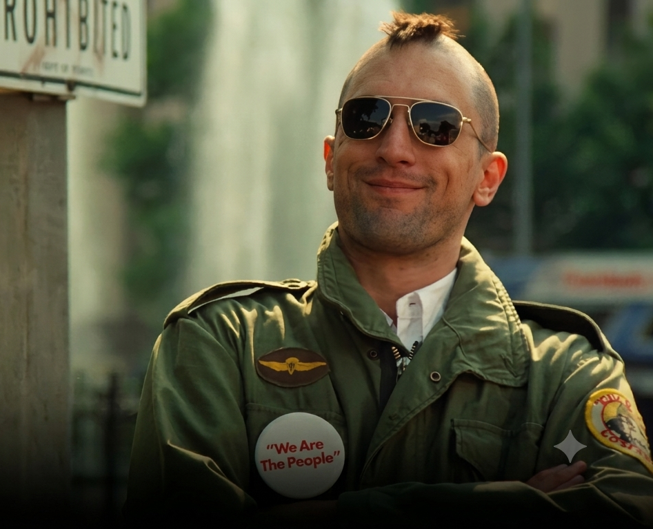
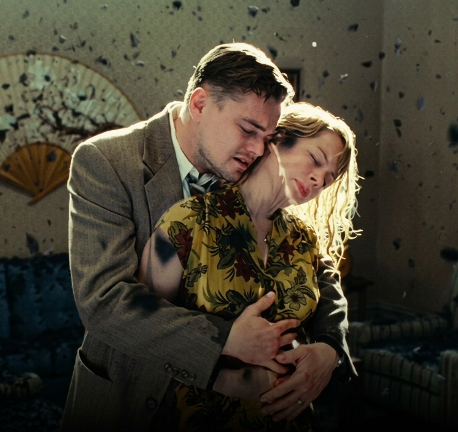

Novedades
Los titulos que presentara Prime Video en junio
Novedades
Los titulos que presentara Prime Video en junio
 Novedades
Llego la biopic de Michael, tan polemica como simple.
Novedades
Llego la biopic de Michael, tan polemica como simple.

Novedades Cannes 2026: las peliculas imperdibles que ya estan dando que hablar
Novedades Netflix redobla su apuesta por el cine argentino y abre nuevas oficinas


LO
MÁS
LEIDO
 La historia real detras de Criaturas Luminosas, la pelicula que emociona y arrasa en Netflx
La historia real detras de Criaturas Luminosas, la pelicula que emociona y arrasa en Netflx
 La Odisea: se lanzo el primer trailer de la nueva pelicula de Christopher Nolan
Leonardo DiCaprio revela cuál es la única de sus películas que ha visto más veces.
La Odisea: se lanzo el primer trailer de la nueva pelicula de Christopher Nolan
Leonardo DiCaprio revela cuál es la única de sus películas que ha visto más veces.

A 50 años de su estreno,¡Taxi Driver vuelve al cine!
Una joya de martin scorsese abandona Netflix y todavia estas a tiempo de verla


RECOMENDADOS


ENTREVISTAS